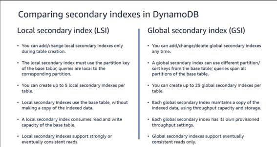

Índices y consultas en DynamoDB
Índices
Si necesitamos acceder a través de atributos que no forman parte de la clave primaria debemos hacer uso de los índices secundarios. Una tabla de DynamoDB también puede contener dos tipos diferentes de índices secundarios:
- Un índice secundario global (GSI)
- Un índice secundario local (LSI)
Un GSI es un índice con una clave de partición y una clave de ordenación que pueden diferir de las claves de la tabla. Los valores de clave principal en índices secundarios globales no tienen que ser únicos. Puede mejorar el rendimiento de las consultas donde se necesita buscar atributos que no están incluidos en la clave original. También pueden reducir los costes cuando se utilizan en las situaciones correctas. Se puede crear una GSI durante el aprovisionamiento de la tabla o después, lo que permite una gran flexibilidad. Un GSI también tiene su propia capacidad aprovisionada, lo que permite dividir los costes entre los diferentes patrones de acceso y decidir si utilizarán la tabla base o la GSI.
Un LSI es un índice que tiene la misma clave de partición que la tabla, pero una clave de ordenación distinta. Al igual que un GSI, esto puede acelerar las consultas sobre atributos no incluidos en la clave original de la tabla, pero que aún utilizan la clave de partición de la tabla. Un LSI debe definirse en el momento de la creación de la tabla y no se puede crear después. La capacidad para un LSI proviene de la tabla base y no tiene su propia capacidad aprovisionada. Una tabla con un LSI también está limitada a un tamaño máximo de 10 GB. Cada tabla de DynamoDB tiene una cuota de 20 índices secundarios globales (cuota predeterminada) y 5 índices secundarios locales.
El siguiente ejemplo muestra una tabla llamada Music, con un índice basado en una clave de partición llamada Artist y una clave de ordenación llamada SongTitle.
Tabla Music
{
"Artist": "No One You Know",
"SongTitle": "My Dog Spot",
"AlbumTitle": "Hey Now",
"Price": 1.98,
"Genre": "Country",
"CriticRating": 8.4
}
{
"Artist": "No One You Know",
"SongTitle": "Somewhere Down The Road",
"AlbumTitle": "Somewhat Famous",
"Genre": "Country",
"CriticRating": 8.4,
"Year": 1984
}
{
"Artist": "The Acme Band",
"SongTitle": "Look Out, World",
"AlbumTitle": "The Buck Starts Here",
"Price": 0.99,
"Genre": "Rock"
}
{
"Artist": "The Acme Band",
"SongTitle": "Still in Love",
"AlbumTitle": "The Buck Starts Here",
"Price": 2.47,
"Genre": "Rock",
"PromotionInfo": {
"RadioStationsPlaying": {
"KHCR",
"KQBX",
"WTNR",
"WJJH"
},
"TourDates": {
"Seattle": "20150622",
"Cleveland": "20150630"
},
"Rotation": "Heavy"
}
}
El siguiente ejemplo muestra la tabla Music de ejemplo, con un nuevo índice llamado GenreAlbumTitle. En el índice, Genre es la clave de partición y AlbumTitle es la clave de ordenación.
{
"Genre": "Country",
"AlbumTitle": "Hey Now",
"Artist": "No One You Know",
"SongTitle": "My Dog Spot"
}
{
"Genre": "Country",
"AlbumTitle": "Somewhat Famous",
"Artist": "No One You Know",
"SongTitle": "Somewhere Down The Road"
}
{
"Genre": "Rock",
"AlbumTitle": "The Buck Starts Here",
"Artist": "The Acme Band",
"SongTitle": "Look Out, World"
}
{
"Genre": "Rock",
"AlbumTitle": "The Buck Starts Here",
"Artist": "The Acme Band",
"SongTitle": "Still In Love"
}
Cada índice pertenece a una tabla, que se denomina la tabla base del índice. En el ejemplo anterior, Music es la tabla base del índice GenreAlbumTitle. DynamoDB mantiene los índices automáticamente. Al agregar, actualizar o eliminar un elemento de la tabla base, DynamoDB agrega, actualiza o elimina el elemento correspondiente en los índices que pertenecen a dicha tabla. Al crear un índice, se especifica qué atributos de la tabla base se copiarán, o proyectarán, en el índice. Como mínimo, DynamoDB proyecta en el índice los atributos de clave de la tabla base. Esto es lo que sucede con el índice GenreAlbumTitle, en el que únicamente se proyectan los atributos de clave de la tabla Music.
La siguiente imagen muestra una comparativa entre ambos tipos de índices secundarios:

Volviendo a la tabla del ejemplo de puntuaciones de un videojuego, es importante determinar qué preguntas deben responderse en la base de datos; por ejemplo, las siguientes preguntas podrían formularse sobre la tabla de puntajes altos de la anterior figura:
- ¿Cuál fue el puntaje más alto de John Smith en Space Mission?
- ¿Cuál fue el puntaje más alto de todos los tiempos en Bug Hunt?
- ¿Quién tiene el puntaje más alto en Space Mission?
Para comprender por qué estas preguntas son importantes para garantizar que la tabla esté diseñada correctamente, debemos comprender cómo funcionan las consultas de DynamoDB.
Consultas y escaneos
DynamoDB tiene dos métodos diferentes para recuperar datos:
- Consulta (Query)
- Escaneo (Scan)
DynamoDB está diseñado para que se realicen consultas solo por los atributos clave. Esto significa que si se desea consultar un atributo que no forma parte de la clave, se deberá escanear toda la tabla. Esto está bien para tablas pequeñas, pero a medida que aumentan de tamaño, el rendimiento de las consultas disminuirá rápidamente. Si se tiene experiencia en bases de datos SQL, se puede pensar en esto en términos similares a una consulta que se ejecuta en una tabla sin un índice. Además de las preocupaciones por el rendimiento, en DynamoDB, cuantos más datos se acceda en una tabla, más costará, por lo que las consultas que implican escanear toda la tabla pueden resultar costosas. Un método de consulta solo se puede utilizar si se está consultando en la clave de partición, y un método de escaneo se utiliza si no está utilizando la clave de partición.
Echemos un vistazo a un ejemplo utilizando la tabla de puntaje alto. Si queremos obtener la puntuación más alta de un jugador en un juego determinado, podemos hacerlo mediante una consulta, ya que PlayerID es nuestra clave de partición y GameName es nuestra clave de ordenación, pero para averiguar cuál fue la puntuación más alta de un juego determinado, se necesitaría un escaneo completo, ya que no estamos utilizando la clave de partición de PlayerID. Lo mismo sería válido para cualquier otro atributo en el que no utilicemos PlayerID.
Como hemos mencionado anteriormente disponemos de dos índices diferentes que podemos utilizar para ayudarnos con el diseño de nuestra tabla, GSI y LSI. Para permitirnos obtener la puntuación más alta de un juego determinado, necesitaríamos que GameName fuera una clave de partición, y un GSI nos permite hacerlo. También podemos configurar la columna Score como la clave de ordenación, que ordena los resultados de la consulta para nosotros, lo que nos permite devolver solo el primero en orden descendente para obtener la puntuación más alta para el GameName que elijamos. El GSI también contendría la clave de partición de la tabla base como atributo, por lo que también podríamos devolver el ID del jugador que tuvo esa puntuación alta mediante una consulta en lugar de un escaneo.
Particiones
Además de mejorar el rendimiento en las consultas, las claves de partición tienen un papel aún más importante en el control de cómo se organizan y almacenan físicamente los datos en el disco.
DynamoDB se ejecuta en un gran conjunto de computadores y sus datos se distribuyen en ellas mediante una técnica llamada fragmentación (sharding). La clave de partición define los datos que deben ubicarse juntos dentro de la misma partición y, por lo tanto, la misma ubicación física. Esto permite que las consultas que devuelven una gran cantidad de registros con la misma clave de partición se devuelvan desde una ubicación, lo que mejora en gran medida la velocidad de la consulta ya que se consultan menos datos.
Esto también optimiza los costes, ya que DynamoDB usa las solicitudes de lectura y escritura según el tamaño de los elementos a los que se accede para cobrar, y cuantos menos elementos se accedan, menor será el coste.
Para algunas tablas con solo una clave de partición como clave principal, no se puede usar esta técnica, ya que todas las claves principales deben ser únicas. Esto significa que los datos se distribuirán en muchas particiones distintas.
El uso de claves de partición para controlar la ubicación de los datos puede provocar que algunas particiones se utilicen más que otras. Por ejemplo, si se tiene una clave de partición con el 80 % de los valores iguales, se crearía una gran partición con la mayoría de los datos en un solo lugar. Esto puede causar un cuello de botella llamado partición caliente (hot partition) y puede ser responsable de problemas de rendimiento. Es importante asegurarse de elegir una clave de partición que tenga valores bien equilibrados y distribuidos para evitar este problema.
Los registros en las particiones se ordenan según la clave de ordenación definida. Esto también puede acelerar las consultas en las que es probable que se recuperen los primeros registros con mayor frecuencia. Un ejemplo aquí es usar una fecha como clave de ordenación para que las fechas más recientes sean las primeras en recuperarse.
Modos de consistencia
DynamoDB ofrece dos modos de consistencia de datos diferentes para manejar distintos casos de uso:
- Lecturas eventualmente consistentes: esta es la opción predeterminada.
- Lecturas fuertemente consistentes.
DynamoDB se utiliza normalmente en casos en los que la coherencia de los datos no es fundamental para la aplicación. Por ejemplo, los datos de la sesión de un sitio web se pueden perder sin que esto tenga un impacto importante; el usuario puede tener que iniciar sesión de nuevo o puede tener que volver a añadir artículos a su carrito de la compra, pero a diferencia de una transacción bancaria, que debe ser totalmente satisfactoria y coherente sin excepción, los datos de la sesión se clasifican como transitorios. Como resultado, DynamoDB utiliza de forma predeterminada lo que se denomina una lectura eventualmente consistente. Una lectura eventualmente consistente significa que es posible que cada solicitud de lectura no obtenga datos que se hayan actualizado recientemente. Esto se debe a la forma en que DynamoDB almacena sus datos; no espera a que la solicitud de escritura se escriba en cada ubicación de almacenamiento antes de confirmar que se ha realizado correctamente. Esto significa que, si su solicitud de escritura no se ha escrito en todas las ubicaciones de almacenamiento antes de intentar leer los datos de nuevo desde la tabla, recuperará los datos antiguos.
Si una aplicación no puede tolerar un modelo eventualmente consistente, DynamoDB ofrece en su lugar lecturas fuertemente consistentes. Esto significa que DynamoDB garantizará que se devuelvan los datos más recientes, pero este modelo tiene algunas desventajas:
- Si hay algún problema o interrupción en la red, la lectura puede fallar con un error HTTP 500.
- Las lecturas fuertemente consistentes tienen una latencia más alta y, por lo tanto, devolverán los datos más lentamente.
- No son compatibles con GSI.
- Utilizan más capacidad de rendimiento que las lecturas eventualmente consistentes, lo que puede afectar a los costes.
DynamoDB también utiliza un modelo de escritura estándar de forma predeterminada. Esto significa que una solicitud para escribir datos se maneja en una transacción diferente de la que los lee. Esto puede causar problemas si se tienen numerosas actualizaciones que se manejan simultáneamente, ya que los datos pueden haber sido modificados por otra sesión. DynamoDB ofrece consultas a nivel de transacción para garantizar la consistencia de los datos durante la transacción de manera similar a un sistema de administración de bases de datos relacionales (RDBMS). El uso del modelo transaccional puede causar conflictos que deben manejarse. Por ejemplo, si se realiza una solicitud UpdateItem mientras se ejecuta una transacción contra el mismo elemento, se recibirá un error TransactionConflictException.